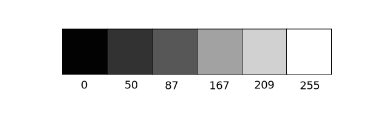
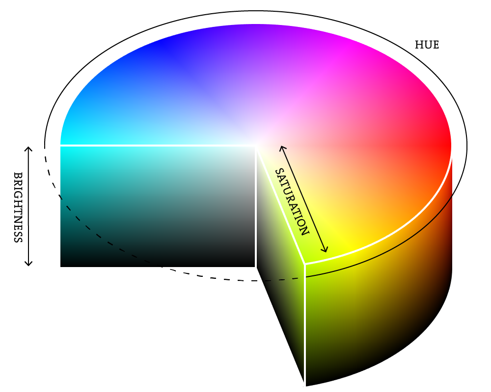

色
デジタル世界では、色を話す場合、精度が必要です。"あの円を青緑色にできますか？"と言うだけでは不十分です。色は、数値の範囲として定義されます。最も単純な場合から始めましょう。黒と白、またはグレースケールです。0は黒、255は白を意味します。その間にある、50、87、162、209などの数値は、黒から白までのグレーの濃淡の範囲を表します。
何かを描く前に、 stroke() と fill()関数を追加することで、任意の形状の色を設定できます。また、background()関数もあり、ウィンドウの背景色を設定できます。以下は例です。
background(255); // 背景を白に設定
stroke(0); // 線の色を黒に設定
fill(150); // 図形の内部を灰色に設定
rect(50,50,75,100); // 長方形を描画
線の色や図形の内部色は、noStroke() と noFill()関数で除去できます。私たちの本能的な反応は、「stroke(0)」として線をなくすことですが、0は「何もない」という意味ではなく、黒を表します。また、両方を除去しないように注意してください。noStroke() と noFill()の両方を除去すると何も表示されません。
さらに、2つの形状を描く場合、p5.jsは常に最新の線と塗りつぶしを使用し、コードを上から下に読み取ります。
RGBカラー
覚えていますか、指で絵を描くことを？3つの「原色」を混ぜることで、どんな色でも作ることができました。すべての色を混ぜると、泥色になりました。使うペンキの量が多ければ多いほど、色は濃くなります。デジタルの色も同様に、3つの原色を混ぜることで構成されていますが、ペンキとは異なります。まず、原色が異なります。赤、緑、青（すなわち「RGBカラー」）です。そして画面上の色は光を混ぜているので、混ぜるルールも異なります。

- 赤 + 緑 = 黄色
- 赤 + 青 = 紫
- 緑 + 青 = シアン（青緑色）
- 赤 + 緑 + 青 = 白
- 色がない = 黒
これには、すべての色が可能な限り明るいものだと仮定していますが、もちろん使用可能な色には範囲があります。したがって、少しの赤と少しの緑と少しの青を混ぜると灰色になり、少しの赤と少しの青を混ぜると濃い紫になります。これには少し慣れが必要かもしれませんが、RGBカラーをプログラムして実験するほど、指で色を混ぜるのと同じように本能的になるでしょう。もちろん、「赤と少しの青を混ぜて」とは言えません。正確な量を指定する必要があります。グレースケールと同様に、各色要素は0（その色が全くない）から255（可能な限り多くの量）までの範囲で表され、R、G、Bの順でリストされます。RGBカラーの混合を理解するには、実験を通じて慣れる必要があります。しかし、次に、一般的な色を使用したコードをカバーします。
色の透明度
各色の赤、緑、青の要素に加えて、色の「アルファ」と呼ばれるオプションの第4要素があります。アルファは透明度を意味し、部分的に透けた要素を重ねて描画する必要がある場合に特に役立ちます。画像のアルファ値は、画像の「アルファチャネル」として総称されることがあります。
ピクセルが文字通り透明ではないことを理解することが重要です。これは単に、色を混ぜ合わせることによって達成される便利な錯覚です。p5.jsは、色の数値を取り、一方の割合ともう一方の割合の一部を加算して、混合の光学的な知覚を作成します。（「バラ色の」眼鏡をプログラミングに興味がある場合は、ここから始めることができます。）
アルファ値も0から255までの範囲であり、0が完全に透明であり（つまり不透明度が0％）、255が完全に不透明である（つまり不透明度が100％）ことを意味します。
カスタムカラーレンジ
p5.jsでは、0から255までのRGBカラーが唯一のカラー処理方法ではありません。実際に、好きなように色を考えることができます。たとえば、色を0から100の範囲で考えることが好きかもしれません（パーセンテージのように）。これは、カスタムを指定することで行うことができます。colorMode().
colorMode(RGB,100);
上記の関数は次のように述べています。「OK、私たちは赤、緑、青の観点から色を考えたいと思います。RGB値の範囲は0から100になります。」
これはほとんど便利ではありませんが、各色成分に異なる範囲を持つこともできます。
colorMode(RGB,100,500,10,255);
これで、「赤の値は0から100、緑は0から500、青は0から10、アルファは0から255です」と言っています。
最後に、おそらくすべてのプログラミングニーズにおいてRGBカラーだけを必要とすることになるでしょうが、HSB（色相、彩度、明度）モードでも色を指定できます。詳細には触れませんが、HSBカラーは以下のように機能します。
- Hue(色相)—カラータイプで、デフォルトでは0から360の範囲です。
- Saturation(彩度)—色の鮮やかさで、デフォルトでは0から100までの範囲です。
- Brightness(明度)—色の明るさで、デフォルトでは0から100の範囲です。
さらに colorMode()を使用すれば、これらの値に独自の範囲を設定することもできます。色相については、色の円盤の360度を考えると0から360の範囲が好ましい場合があります。彩度と明度については、0から100％を考えると0から100までの範囲が好ましい場合があります。